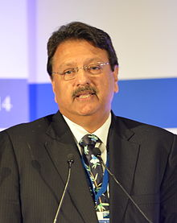

Ajay Piramal (born August 3, 1955) is an Indian businessman. In 2016, Forbes
estimated his net worth to be US $3.3 Billion, ranking him number 42 on India’s
Top 50 richest people.He leads the Piramal Group, a diversified conglomerate
with a presence across 100 cities.Under his leadership the Piramal Group evolved
from a textile centric business to a USD 5 billion conglomerate with diversified
business interests across pharmaceuticals, packaging, financial services and
real estate.
His vision is that the group should rake in an annual revenue of US$20 billion
by 2020.
In 1988, he bought Nicholas Laboratories, an Australian multinational
corporation. The company, which then competed with the likes of Pfizer and
Glaxo, is now ranked fifth among the top 10 pharma companies in India, having
made a string of overseas acquisitions like the Indian subsidiaries of Roche,
Boehringer Mannheim, Rhone Poulenc, ICI and Hoechst Research Centre. India`s
first major shopping mall, Crossroads was developed from three redundant Piramal
factory buildings in Mumbai.
Over the past decade, the group has completed more than 20 acquisitions and
partnered with global companies such as Merck, Eli Lilly, Pfizer, Abbott,
Vodafone, Bio-Syntech, Bayer and Decision Resources Group (DRG). The group is
now ranked amongst the 50 largest corporations across India by Fortune 500.
Ajay Piramal led Piramal Enterprises Ltd agreed to buy a 5.5% stake in Vodafone
India for Rs. 30.07 billion ($618 million), taking the total stake of the
cash-rich drug manufacturer in the mobile telecom firm to 11%. In April 2014,
Piramal Enterprises Ltd sold its 11% stake for Rs. 8,900 crore, at a 51.78%
premium to the price the company had paid in 2011-12.
After selling his stake in Vodafone, Piramal spent Rs. 2,014 crore to buy a 20%
stake in Shriram Capital Ltd, an arm of the Chennai-based Shriram Group. The
purchase was made in addition to a Rs. 1,636 crore investment in Shriram
Transport Finance Co. Ltd, for a 9.9% stake. Piramal also serves as the Chairman
of Shriram Group.
Piramal wears several hats. Besides being on the board of Piramal Enterprises
Ltd, Piramal Phytocare Ltd, and Piramal Glass Ltd, he is the Chairman of the
Board of Governors of The Indian Institute of Technology, Indore. He is also a
strategic member of the Board of Dean’s Advisors at the Harvard Business School
in Boston.
Most recently, Piramal was appointed to the Board of Tata Sons, the holding
company of the US$103 billion diversified Tata conglomerate, as a Non-Executive
Director.
He is Chairman of Pratham, which is the largest non-governmental organisation in
the education sector in India, and reaches out to 33 million children through
its "Read India" campaign.